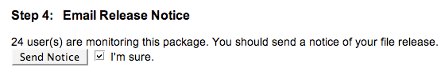

Manual Release (Deprecated)¶
Warning
This release guide is deprecated and only kept currently for reference resources. See the official release guide for current practices.
Before you start¶
GeoTools release¶
For any non-beta release (including release candidates) a GeoServer release requires a corresponding GeoTools release. Therefore before you start you should coordinate a GeoTools release. Either performing the release yourself or asking on the GeoTools devel list for a volunteer to perform the release.
TODO: point to geotools release docs
Notify developer list¶
It is good practice to notify the GeoServer developer list of the intention to make the release a few days in advance, even though the release date has been agreed upon before hand.
Prerequisites¶
The following are necessary to perform a GeoServer release:
- Commit access to the GeoServer Git repository
- Build access to Hudson
- Edit access to the GeoServer Blog
- Administration rights to GeoServer JIRA
- Release/file management privileges in SourceForge
Versions and revisions¶
When performing a release we don't require a "code freeze" in which no developers can commit to the repository. Instead we release from a revision that is known to pass all tests, including unit/integration tests as well as CITE tests.
To obtain the GeoServer and Geotools revisions that have passed the CITE test, navigate to the latest Hudson run of the CITE test and view it's console output and select to view its full log. For example:
http://hudson.opengeo.org/hudson/view/cite/job/cite-wfs-1.1-master/526/consoleFull
Perform a search on the log for 'Git revision' and you should obtain the following.:
version = 2.4-SNAPSHOT
Git revision = 68cbe445ca378e0dd04405870ef95c852189c1b0
Git branch = 68cbe445ca378e0dd04405870ef95c852189c1b0
build date = 08-Jul-2012 03:36
geotools version = 9-SNAPSHOT
geotools revision = 9517eebf412ce5cda354e7945672293c37cddcc4
Since most GeoServer releases require an official GeoTools release the GEoTools revision is usually not needed. But if performing a beta release it is allowed to release directly from a specific GeoTools revision.
Build the Release¶
Run the geoserver-release job in Hudson. The job takes the following parameters:
BRANCH
The branch to release from, "2.2.x", "2.1.x", etc... This must be a stable branch. Releases are not performed from the main development branch.
REV
The Git revision number to release from. eg, "24ae10fe662c....". If left blank the latest revision (ie HEAD) on the
BRANCHbeing released is used.
VERSION
The version/name of the release to build, "2.1.4", "2.2", etc...
GT_VERSION
The GeoTools version to include in the release. This may be specified as a version number such as "8.0" or "2.7.5". Alternatively the version may be specified as a Git branch/revision pair in the form
<branch>@<revision>. For example "main@36ba65jg53.....". Finally this value may be left blank in which the version currently declared in the geoserver pom will be used (usually a SNAPSHOT). Again if performing a non-beta release this version must be a version number corresponding to an official GeoTools release.
GWC_VERSION
The GeoWebCache version to include in the release. This may be specified as a version number such as "1.3-RC3". Alternatively the version may be specified as a Git revision of the form
<branch>@<revision>such as "master@1b3243jb...". Finally this value may be left blank in which the version currently declared in the geoserver pom will be used (usually a SNAPSHOT).Git Again if performing a non-beta release this version must be a version number corresponding to an official GeoTools release.
GIT_USER
The Git username to use for the release.
GIT_EMAIL
The Git email to use for the release.
This job will checkout the specified branch/revision and build the GeoServer release artifacts against the GeoTools/GeoWebCache versions specified. When successfully complete all release artifacts will be uploaded to the following location:
http://gridlock.opengeo.org/geoserver/release/<RELEASE>
Additionally when the job completes it fires off two jobs for building the Windows and OSX installers. These jobs run on different hudson instances. When those jobs complete the .exe and .dmg artifacts will be uploaded to the location referenced above.
Test the Artifacts¶
Download and try out some of the artifacts from the above location and do a quick smoke test that there are no issues. Engage other developers to help test on the developer list.
Release in JIRA¶
Run the geoserver-release-jira job in Hudson. The job takes the following parameters:
VERSION
The version to release, same as in the previous section. This version must match a version in JIRA.
NEXT_VERSION
The next version in the series. All unresolved issues currently fils against
VERSIONwill be transitioned to this version.
JIRA_USER
A JIRA user name that has release privileges. This user will be used to perform the release in JIRA, via the SOAP api.
JIRA_PASSWD
The password for the
JIRA_USER.
This job will perform the tasks in JIRA to release VERSION. Navigate to JIRA and verify that the version has actually been released.
Publish the Release¶
Run the geoserver-release-publish in Jenkins. The job takes the following parameters:
VERSION
The version being released. The same value s specified for
VERSIONwhen running thegeoserver-releasejob.
BRANCH
The branch being released from. The same value specified for
BRANCHwhen running thegeoserver-releasejob.
This job will rsync all the artifacts located at:
http://gridlock.opengeo.org/geoserver/release/<RELEASE>
to the SourceForge FRS server. Navigate to Sourceforge and verify that the artifacts have been uploaded properly. Set the necessary flags on the .exe, .dmg and .bin artifacts so that they show up as the appropriate default for users downloading on the Windows, OSX, and Linux platforms.
Announce the Release¶
Mailing lists¶
Note
This announcement should be made for all releases, including betas and release candidates.
Send an email to both the developers list and users list announcing the release. The message should be relatively short. The following is an example:
Subject: GeoServer 1.7.1 Released
The GeoServer team is happy to announce the release of GeoServer 1.7.1.
The release is available for download from http://geoserver.org/release/1.7.1/
This release comes with some exciting new features. The new and
noteworthy include:
* KML Super Overlay and Regionating Support
* KML Extrude Support
* KML Reflector Improvements
* Mac OS X Installer
* Dutch Translation
* Improved Style for Web Admin Interface
* New SQL Server DataStore Extension
* Improved Oracle DataStore Extension
* Default Templates per Namespace
Along with many other improvements and bug fixes. The entire change log
for the 1.7.1 series is available in GitHub:
https://github.com/geoserver/geoserver/releases/tag/1.7.1
A very special thanks to all those who contributed bug fixes, new
features, bug reports, and testing to this release.
--
The GeoServer Team
SourceForge¶
Note
This announcement should be made for all releases, including betas and release candidates.
-
Log in to SourceForge.
-
Edit the release, and scroll down to the bottom of the page.
-
Check the I'm sure check box, and click the Send Notice button.

-
Repeat for the extension release.
GeoServer Blog¶
Note
This announcement should be made for all releases, including betas and release candidates.
Note
This step requires an account on http://blog.geoserver.org
- Log into the GeoServer Blog.
- Create a new post. The post should be more "colorful" than the average announcement. It is meant to market and show off any and all new features. Examples of previous posts:
- Do not publish the post. Instead present it to the GeoServer outreach team for review, and they will publish it.
SlashGeo¶
Note
This announcement should be made only for official releases. Not betas and release candidates.
Note
This step requires an account on http://slashgeo.org
- Go to http://slashgeo.org, and log in, creating an account if necessary.
- Click the Submit Story link on the left hand side of the page. Examples of previous stories:
FreeGIS¶
Note
This announcement should be made only for official releases. Not betas and release candidates.
Send an email to bjoern dot broscheit at uni-osnabrueck dot de. Example:
Subject: GeoServer update for freegis
GeoServer 1.7.1 has been released with some exciting new features. The big
push for this release has been improved KML support. The new and noteworthy
include:
* KML Super Overlay and Regionating Support
* KML Extrude Support
* KML Reflector Improvements
* Mac OS X Installer
* Dutch Translation
* Improved Style for Web Admin Interface
* New SQL Server DataStore Extension
* Improved Oracle DataStore Extension
* Default Templates per Namespace
Along with many other improvements and bug fixes. The entire change log for
the 1.7.1 series is available in the issue tracker:
http://jira.codehaus.org/browse/GEOS/fixforversion/14502
FreshMeat¶
Note
This announcement should be made only for official rel-eases. Not betas and release candidates.
Note
This step requires an account on http://freshmeat.net/
-
Go to http://freshmeat.net/ and log in.
-
Search for "geoserver" and click the resulting link.
-
Click the add release link at the top of the page.
-
Choose the Default branch
-
Enter the version and choose the appropriate Release focus.
Note
The release focus is usually 4,5,6, or 7. Choose which ever is appropriate.
-
Enter a succinct description (less than 600 characters) of the Changes.
-
Update the links to the following fields:
- Zip
- OS X package
- Changelog
-
Click the Step 3 button.
-
Click the Finish button.